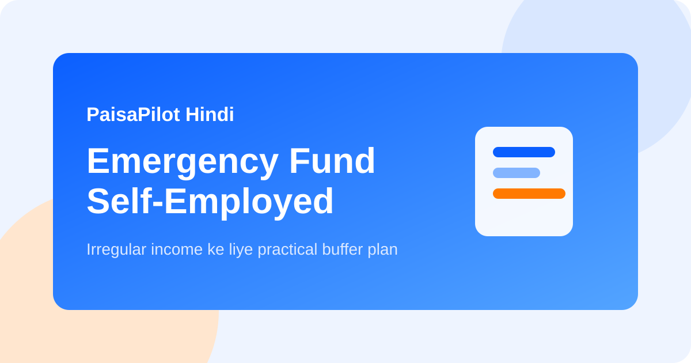

Self-Employed लोगों के लिए Emergency Fund: Realistic Buffer Plan
Last updated: March 14, 2026

Self-employed लोगों के लिए emergency fund सिर्फ तीन महीने का backup नहीं होता। Freelancers, agents, shop owners, creators और service providers की income कई बार uneven रहती है। इसलिए buffer भी salary वालों से ज्यादा practical होना चाहिए।
Quick Answer
अधिकांश self-employed readers को 6 से 12 महीने के essential personal expenses और अलग से छोटा business buffer रखना चाहिए। यह पैसा safe, liquid और easy-access होना चाहिए।
Standard Rule क्यों कम पड़ जाता है?
- Payment delay common है।
- Seasonal income dip आ सकती है।
- Business खर्च income रुकने पर भी चल सकते हैं।
- Health issue आने पर काम और cashflow दोनों रुक सकते हैं।
Target कैसे निकालें
| Component | क्या जोड़ें |
|---|---|
| घर के essential खर्च | Rent, grocery, बिजली, EMI, fees, medicine, transport |
| Business खर्च | Internet, software, helper salary, small rent, minimum stock |
| Irregular obligations | Insurance premium, renewals, tax, repairs |
फिर अपनी risk profile के हिसाब से buffer चुनें:
- 6 months: relatively stable clients और low fixed costs
- 9 months: moderate volatility और dependents
- 12 months: highly irregular income, single-earner home, heavy obligations
Fund को कहां रखें
- Layer 1: एक महीने का खर्च savings account में
- Layer 2: 2-3 महीने easily accessible parking में
- Layer 3: बाकी amount short safe parking जैसे FD ladder
Personal aur Business Buffer अलग रखें
यह सबसे important habit है। अगर personal और business money mix होगी, तो आपको पता ही नहीं चलेगा कि stress घर में है या business में।
- Personal emergency fund household continuity बचाता है
- Business buffer work continuity बचाता है
- Separate accounts clarity बढ़ाते हैं
Fast Build Strategy
- हर payment receive होते ही fixed percentage transfer करें
- High-income month में lifestyle inflate न करें
- Tax money अलग रखें
- Weak subscriptions और leak expenses काटें
- Emergency account के लिए floor balance rule रखें
क्या real emergency है?
Income disruption, urgent medical issue, unavoidable home repair, या survival खर्च real emergency हैं। Travel sale, phone upgrade, festival overspending emergency नहीं हैं।
Use के बाद rebuild कैसे करें
जैसे ही fund use हो, next inflow से rebuild start करें। Better month का इंतजार मत करें। Rule simple है: हर payment का fixed हिस्सा emergency fund में वापस भेजें।
FAQ
क्या emergency fund को equity mutual fund में रखें?
नहीं। Emergency money का main purpose safety और access है, return नहीं।
क्या credit card emergency backup हो सकता है?
Temporary gap में मदद कर सकता है, लेकिन cash reserve का substitute नहीं है।
अगर अभी शुरुआत कर रहा हूं तो?
पहले 1 महीने का essential buffer बनाइए, फिर 3 महीने, फिर 6 महीने की तरफ बढ़िए।
संबंधित लेख
FD Ladder Guide, Bank Statement Review, Side Income System
Editorial Note: यह सामग्री educational purpose के लिए है।